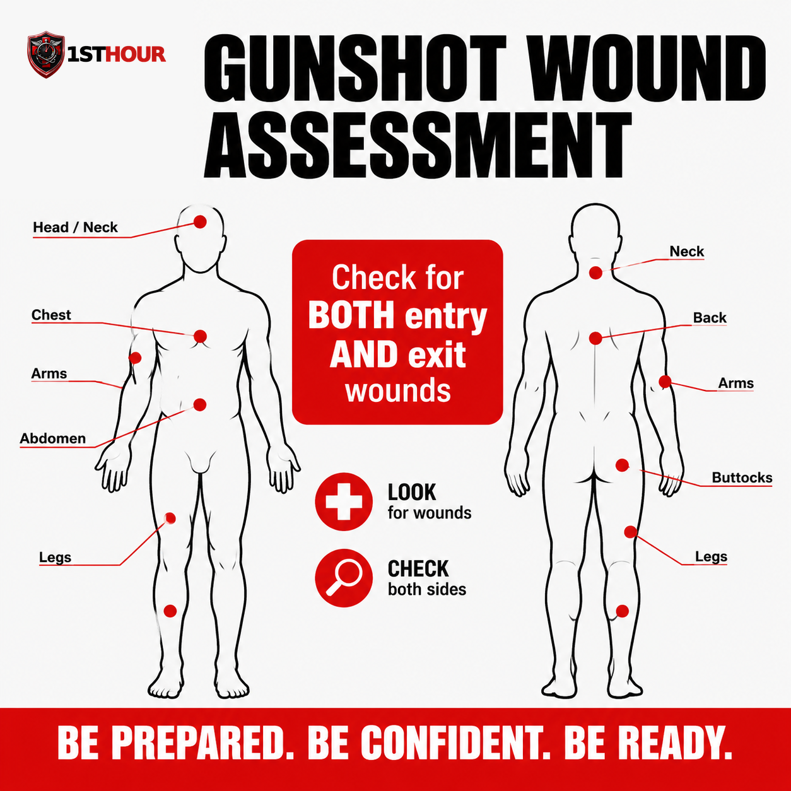
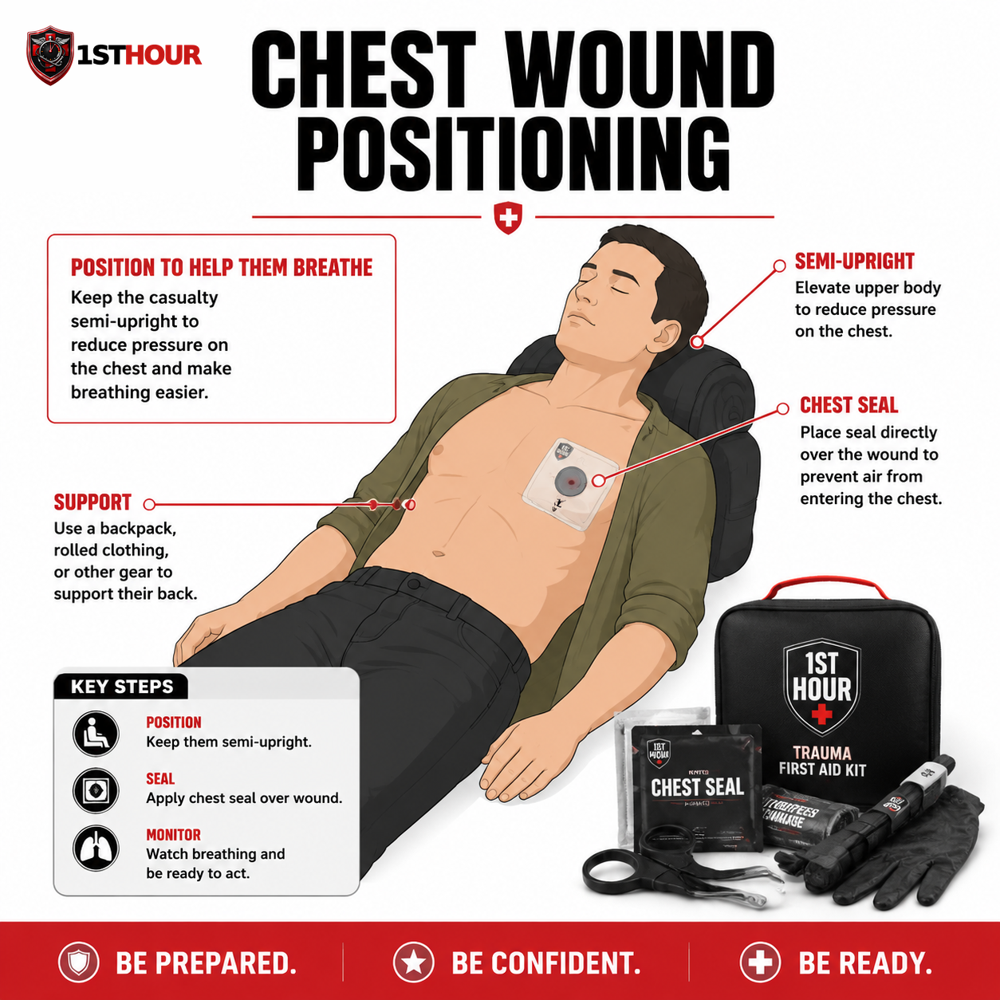

Gunshot Wound Response
Builds on the tourniquet and wound-packing skills from Severe Bleeding & Hemorrhage Control — this guide covers what's different when the wound is a gunshot: entry and exit assessment, multiple wound sites, retained fragments, and chest seals.
1. Why the First Hour Matters
Gunshot wounds kill almost exclusively through one mechanism: uncontrolled bleeding, whether it's visible and pouring out of an obvious wound or hidden inside the chest or abdomen. Military and civilian trauma data agree on this point — the overwhelming majority of preventable deaths from penetrating trauma happen before the person ever reaches a hospital, and most of those deaths are from hemorrhage that a bystander could have slowed or stopped in the first few minutes.
A firearm injury compresses the timeline that already applies to severe bleeding in general. A bullet can damage a major blood vessel instantly and without warning; there's frequently more than one wound to manage at once, and — unlike a laceration you can see start to finish — you often don't know how much internal damage happened along the bullet's path until the person is already showing signs of shock. That uncertainty is exactly why the "Stop the Bleed" campaign this guide follows was built in direct response to mass-casualty shooting events: the goal is to turn ordinary bystanders into the first line of hemorrhage control before EMS can physically reach the scene.
This guide assumes you already know — or are about to learn from Severe Bleeding & Hemorrhage Control — how to apply a tourniquet and pack a wound. What follows is everything specific to a gunshot: how to find every wound, what to leave alone, and how to handle the two failure modes bystanders miss most often — a second wound they never checked for, and bleeding they can't see at all.
2. Recognizing Gunshot Wounds
The single most common mistake bystanders make with a gunshot injury is stopping at the first wound they see. A bullet that enters the body has to go somewhere — it either lodges inside or exits somewhere else, and that exit wound is frequently larger, messier, and more dangerous than the entry point everyone's attention is focused on.
| Wound type | What it typically looks like | What it means for you |
|---|---|---|
| Entry wound | Usually smaller and more round, edges turned slightly inward. May show soot, stippling, or a faint burn ring if the shot was fired at close range. | Almost never the full extent of the injury — keep looking. |
| Exit wound | Often larger and more irregular than the entry, edges turned outward, typically bleeds more heavily. | May be the primary source of visible blood loss — treat whichever wound is bleeding worse first, but pack or dress both. |
| No exit found | Only one wound visible anywhere on the body after a full check. | The bullet or a fragment is still inside — this is expected, not a sign you missed something. See Section 6 on retained fragments. |
Because entry and exit wounds can be far apart on the body — a round can enter the shoulder and exit the lower back — a full-body check matters more here than with most other injuries. Work systematically, ideally with a second person helping, and check areas that are easy to overlook: the scalp and hairline, under the arms, between skin folds, the back, and the buttocks and groin if the person was seated or in motion when hit.

3. The Immediate Response Protocol
This sequence mirrors the core Stop the Bleed protocol from Severe Bleeding & Hemorrhage Control, with one addition specific to firearm injuries at the front: confirming the scene is actually safe to enter before you do anything else.
- Confirm the scene is safe before approaching. If there is any possibility the shooter is still present or the area isn't secured, do not approach — see Section 9 for scene-safety guidance specific to an active-threat situation.
- Call or have someone call 911 immediately and tell the dispatcher a firearm was involved — this changes how the response is staged and may mean EMS waits for police to clear the scene before entering (see Section 11).
- Apply firm, direct pressure to any severe bleeding you can see, immediately — don't wait to check the rest of the body first. Use your bare hands if nothing else is available, or non-latex gloves from your kit if they're within reach, then grab the thickest clean cloth, gauze, or dressing you can find.
- Once that bleeding is controlled (or you have help holding pressure), sweep the rest of the body for additional entry and exit wounds — a bullet often makes more than one hole, and bystanders routinely stop at the first wound they find (Section 2). If you have help, assign a second person to hold pressure on a second wound the moment it's found rather than splitting your own attention.
- Escalate to a tourniquet for a limb wound, or pack the wound for a torso/junctional wound, exactly as covered in Sections 4 and 5 — don't wait to see if direct pressure alone will be enough.
- If a wound is in the chest and you hear a sucking or hissing sound with each breath, apply a chest seal immediately — see Section 6. This takes priority over a dressing that isn't sealed.
- Keep the person as still and warm as possible and monitor breathing and consciousness continuously until EMS arrives.
4. Applying a Tourniquet
A gunshot wound to an arm or leg is treated with a tourniquet exactly the same way as any other severe limb bleed — the technique doesn't change because the wound came from a bullet instead of a blade or blunt trauma. If you haven't already, read Severe Bleeding & Hemorrhage Control's Section 4 for the full step-by-step walkthrough with both commercial and improvised tourniquets. The short version:
- Place it high and tight — 2–3 inches above the wound, never over a joint. If you're unsure exactly where the bleeding is coming from, place it as high on the limb as possible.
- Tighten fully and twist the windlass until bleeding stops completely, not just slows.
- Lock it in place and write down the time it was applied. EMS needs this exact number.
5. Wound Packing & Hemostatic Gauze
For a gunshot wound to the torso, neck, or a junctional area a tourniquet can't reach, the response is the same wound-packing technique covered in full in Severe Bleeding & Hemorrhage Control's Section 5 — hemostatic gauze pushed firmly into the wound cavity, packed to the base of the wound, then held under continuous direct pressure.
The gunshot-specific adjustment: if you've confirmed both an entry and an exit wound on the torso, pack both. Treat them as two separate wounds requiring two separate packing efforts and, ideally, two sets of hands holding pressure — don't assume packing one side is enough because the bleeding "looks" controlled from the other.
- Expose both wounds if an entry and exit are both present — cut or move clothing out of the way for each.
- Pack each wound tightly with gauze, using hemostatic gauze first if you have it, pushing material to the base of the wound cavity rather than laying it on top.
- Hold firm, continuous pressure on each packed wound for at least three minutes without letting up — recruit a second responder for the second wound if at all possible.
- Secure both with pressure bandages once bleeding is controlled, without removing the packed gauze underneath.
6. Fragments, Multiple Wounds & Chest Seals
This section covers the three situations that are unique to firearm injuries and don't come up with other kinds of severe bleeding: a bullet or fragment still lodged in the body, more wounds than you can treat with two hands, and a penetrating chest wound that lets air leak into the chest cavity.
Retained bullets and fragments
Do not attempt to remove a bullet or fragment, and do not probe the wound to try to find one. Both actions are far more likely to cause new damage — cutting a blood vessel that was undamaged, or dislodging a clot that formed around the fragment — than they are to help. A retained fragment is a job for a surgeon with imaging equipment, not a first responder in the field. If you can see a fragment sitting at the surface of a wound and it comes out on its own while you're packing, that's fine; the rule is against digging for one or pulling on one that's still seated in tissue.
Multiple wound triage
When one person has several gunshot wounds, or when you have more than one injured person, triage by immediacy: control the bleed that will kill fastest first — visible spurting or pooling blood takes priority over a wound that's oozing slowly. A tourniquet, once applied, is largely self-sustaining, which is exactly why it's prioritized over ongoing manual pressure when your hands are needed elsewhere. Work through wounds in order of severity rather than the order you happened to find them.
Chest wounds and chest seals
A gunshot wound to the chest can let air leak into the space around the lung with every breath instead of staying in the airway where it belongs — you may hear a sucking or hissing sound at the wound site. Left alone, this can collapse the lung — and if enough air keeps building up with nowhere to escape, it can progress to a more dangerous tension pneumothorax that puts pressure on the heart and major blood vessels, which is exactly the deterioration Step 5 below is watching for. If your kit includes a chest seal (an occlusive or vented adhesive dressing), apply it directly over the wound the moment you identify this — it takes priority over an ordinary gauze dressing at that specific wound.
- Locate the wound and wipe the surrounding skin as dry as you can so the seal's adhesive will hold.
- Apply the chest seal directly over the wound, centered so its edges adhere to intact skin all the way around.
- Position the person semi-upright if possible, rather than flat on their back — this reduces pressure on the chest and makes breathing easier, and is the single biggest comfort/effectiveness improvement you can make without equipment.
- Check the back for a matching exit wound and apply a second seal there if one exists — a chest wound needs the same entry/exit check as anywhere else on the body.
- Monitor breathing closely. If breathing becomes noticeably more difficult after applying any chest seal — vented or not — lift one edge of the seal briefly to release trapped air, then reseal; this applies whether or not the product is specifically "designed" to vent on its own. If your kit has a choice, a vented chest seal is generally preferred for this reason.

7. Pressure Dressings & Improvised Materials
Once each wound's bleeding is under control — by pressure, tourniquet, packing, or a chest seal — a pressure dressing over the packed material keeps it that way and frees your hands for the next wound or the next casualty.
- Commercial pressure bandage: wrap firmly and evenly from below the wound upward, tight enough to maintain pressure without cutting off circulation — check that fingers or toes past the dressing stay warm and pink.
- Improvised options: a folded shirt secured with a belt, a scarf wrapped snugly, or duct tape over a folded pad all work when you're managing more wounds than you have commercial dressings for.
- Never remove a dressing to "check" a wound underneath. If blood soaks through, add more material on top rather than taking anything off — this applies to every wound on a multi-wound patient, not just the first one you treated.
8. Recognizing & Managing Shock
Shock is especially dangerous after a gunshot wound because the amount of internal bleeding is rarely obvious from the outside. A person can be losing significant blood into the chest, abdomen, or a large muscle mass around a wound track while showing only a small external hole and no external bleeding to speak of — which is exactly why shock symptoms, not the wound's appearance, should drive how urgently you act.
Signs of shock:
- Pale, cool, or clammy skin
- Rapid, weak pulse
- Rapid, shallow breathing
- Confusion, anxiety, or restlessness
- Nausea or vomiting
- Extreme thirst
- Progressive weakness or loss of consciousness
What to do:
- Keep all identified wounds controlled — shock will not improve while any bleeding continues, visible or not.
- Lay the person flat if there's no suspected spinal injury and no chest wound requiring the semi-upright position from Section 6 — the two positions can conflict, so prioritize chest-wound breathing support if both apply. If there's no suspected spinal injury, leg injury, or breathing difficulty of any kind, and no chest wound requiring the semi-upright position from Section 6, you may gently raise the legs about 6–12 inches — current first aid guidance notes this can help blood return to vital organs, but the effect is brief and not required; don't delay or skip warmth and bleeding control to do it, and stop if it causes pain, shortness of breath, or is impractical given the injury location.
- Keep them warm with a blanket, jacket, or emergency blanket — losing body heat significantly worsens shock.
- Do not give food or water, even if requested — it can cause vomiting and complicates emergency surgery.
- Keep talking to them and note any change in alertness to report to EMS the moment they arrive.
9. Special Situations
Scene safety near an active threat
Unlike most other trauma in this library, a gunshot wound can mean the danger that caused it is still nearby. If there is any indication the shooter is still present, still armed, or the scene has not been secured by law enforcement, do not approach the injured person — get to cover, call 911, and wait for police to clear the area or signal that it's safe to render aid. This isn't overcaution: rescuers who become a second casualty stop helping the first one entirely. If you are already with the injured person when a threat is confirmed nearby, prioritize moving to cover over continuing treatment, even mid-procedure — a tourniquet in progress can be resumed the moment you're safe; a second gunshot victim cannot be undone.
Multiple casualties
Mass-casualty shooting events are the exact scenario the modern Stop the Bleed curriculum was built around. If you're one of several capable bystanders, coordinate quickly — assign one person per identified severe bleed rather than everyone clustering around the first person found. If you're the only capable responder, triage by immediacy exactly as described in Section 6: the wound most likely to kill fastest gets treated first, tourniquets before ongoing manual pressure, chest seals before minor dressings.
Pediatric gunshot wounds
The same core techniques apply — locate every wound, pack or tourniquet as appropriate, apply a chest seal if needed — but a child's total blood volume is much smaller, so what looks like a moderate bleed by adult standards can become critical far faster. Don't wait to escalate to a tourniquet or packing if direct pressure isn't controlling the bleeding quickly, and treat any sign of shock in a child as more urgent than the same signs in an adult.
10. Climate & Demographic Notes
The bleeding and shock response in this guide doesn't change by geography, but the same environmental factors that affect any severe bleeding emergency apply here too — plus one response-time factor specific to a shooting scene.
- Cold climates: blood loss and cold exposure compound each other — a drop in body temperature interferes with clotting, meaning a gunshot wound can bleed longer and harder the colder the person gets. Warming the person is part of bleeding control, not just comfort, especially in northern states and winter conditions.
- Hot climates: heat accelerates dehydration, which lowers blood volume and pushes a person into shock faster after any significant blood loss. In southern and desert states, get the person into shade and treat aggressively for shock even after a smaller apparent volume of blood loss.
- Scene-clearance delays: unlike most medical emergencies, EMS response to a shooting is frequently staged behind a law enforcement perimeter until the scene is confirmed safe — a process that can add meaningful time beyond the normal EMS response window discussed elsewhere in this library, urban or rural. Plan to sustain bleeding control for longer than you might for a non-violent injury, and don't assume "help is close" translates to "help can reach you yet."
11. When to Call 911
Tell the dispatcher explicitly that a firearm was involved as early in the call as possible — this affects how the response is staged, including whether EMS waits for police confirmation that the scene is secure before approaching (Section 9). Give your location, the number of people injured, and what wounds you've found and treated so far, including any chest seal or tourniquet and the time it was applied.
Do not attempt to drive a gunshot victim to a hospital yourself unless a 911 dispatcher explicitly tells you to because EMS cannot reach you. A moving vehicle makes it far harder to maintain pressure on multiple wounds, monitor a chest seal, or respond if the person's condition changes suddenly.
12. Aftercare & Follow-Up
Once EMS has taken over, a few things matter afterward.
- Tell EMS everything you found and did — every wound location, every tourniquet's application time, and whether a chest seal is in place. This directly shapes how the trauma team prioritizes treatment.
- Restock your kit immediately, including any chest seal, tourniquet, or hemostatic gauze used — a real emergency means those items need replacing before the kit can be trusted again.
- It's normal to feel shaken afterward, and more so after a violent-injury scene than most other emergencies. Debrief with someone, and talk to a professional if the experience stays with you.
- If you had bare-hand contact with blood, wash thoroughly and mention it to EMS or a doctor — this is a standard, low-drama thing to flag.
13. Essential Items Checklist
This protocol assumes the same core supplies as Severe Bleeding & Hemorrhage Control, plus one addition specific to penetrating chest trauma. Restock immediately after any real use, per Section 12.
- Commercial tourniquet (CAT-style) — Section 4. For any limb wound with severe bleeding.
- Hemostatic gauze — Section 5. Clotting-agent gauze for deep wound packing.
- Chest seal (occlusive/vented) — Section 6. For a penetrating chest wound.
- Plain roller gauze / trauma dressing — Sections 5–7. Backup packing and dressing padding for a second or third wound.
- Pressure/elastic wrap bandage — Section 7. Secures packing and holds pressure hands-free.
- Non-latex gloves — worn before contact with any blood, per Section 3's immediate response steps.
- Trauma shears — Section 2. Cuts clothing away fast to complete the full-body wound check.
- Permanent marker or time-tape — Section 4. Records the exact tourniquet application time for EMS.
- Emergency/space blanket — Sections 3 & 8. Warmth slows the progression of shock.
14. Your State: Good Samaritan Protections
Every U.S. state has some form of Good Samaritan law — legal protection for people who provide reasonable emergency assistance in good faith, without expectation of payment. The exact wording, what's covered, and any exceptions vary by state, and laws change over time. What follows is a general overview for the twelve most populous states, not legal advice — see the full disclaimer below.
California
Good Samaritan protection extends broadly to emergency care given in good faith, including non-medical bystanders. Coastal wildfire-adjacent regions also mean bleeding response sometimes overlaps with evacuation conditions — treat and transport decisions may be affected by road closures.
Texas
Good Samaritan protection applies to good-faith emergency care without expectation of compensation. Hot, humid summers raise shock and dehydration risk after blood loss — see the heat-climate note in Section 10.
Florida
Good Samaritan protection covers emergency assistance rendered in good faith. Hurricane-season power and EMS disruptions can extend response times well beyond normal averages in affected areas.
New York
Good Samaritan protection applies to good-faith emergency aid. Cold-season response in upstate and rural areas should factor in the cold-climate clotting note in Section 10.
Pennsylvania
Good Samaritan protection covers emergency care provided in good faith and without compensation. Rural counties outside Philadelphia and Pittsburgh can see longer EMS transport times.
Illinois
Good Samaritan protection applies broadly to good-faith emergency assistance. Winters are a factor for the cold-climate bleeding/shock interaction described in Section 10.
Ohio
Good Samaritan protection covers those who render emergency care in good faith. A largely rural geography outside major metros means response-time planning matters here.
Georgia
Good Samaritan protection applies to good-faith emergency aid. Hot, humid summers make the heat/shock note in Section 10 especially relevant.
North Carolina
Good Samaritan protection covers good-faith emergency assistance. Both coastal storm exposure and mountain-region rural response times are relevant depending on where in the state you are.
Michigan
Good Samaritan protection applies to those providing emergency care in good faith. Cold-weather response is a real factor for much of the year — see Section 10.
New Jersey
Good Samaritan protection covers good-faith emergency assistance without compensation. Dense population generally means shorter average EMS response times than the national average.
Virginia
Good Samaritan protection applies to good-faith emergency care. Response times vary sharply between the Northern Virginia/D.C. corridor and the state's more rural southern and western regions.
15. Medical Disclaimer
This guide is for general educational purposes only and does not constitute medical advice, diagnosis, or treatment. It is not a substitute for professional medical care, emergency medical services, or a certified first aid, CPR, or Stop the Bleed course, which we strongly recommend taking in person.
In any real emergency, call 911 (or your local emergency number) immediately. Nothing in this guide should delay that call.
The Good Samaritan law information in Section 14 is general information, not legal advice. Laws vary by state, change over time, and may have exceptions not covered here. Consult a licensed attorney in your state for guidance on your specific situation.
1st Hour and its parent company make no warranty, express or implied, regarding outcomes from applying the information in this guide, and disclaim liability for actions taken based on its contents to the fullest extent permitted by law.
Editor's note: this edition reflects content as of August 24, 2026. 1st Hour periodically revises protocol guides as best practices evolve — visit 1sthourprotocols.com/gunshot-wound-response for the current edition and to re-download the latest PDF.